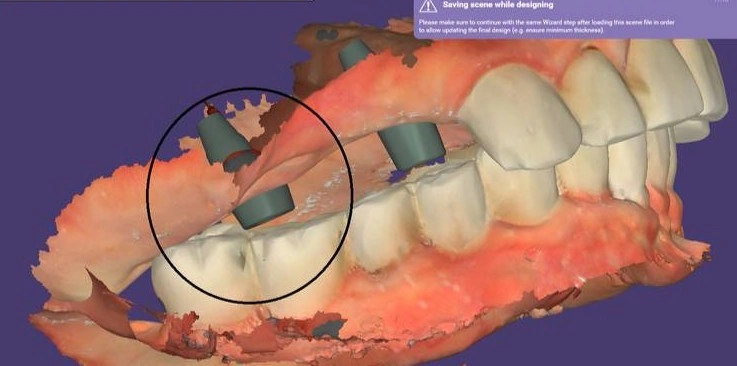

Insight 57 — Managing Limited Vertical Space in Posterior Implant Restoration
Published:
Last reviewed:
فارسی

Clinical Explanation
Severely limited occlusal space in a posterior implant does not necessarily mean changing the abutment system and imposing the cost of advanced components on the patient; combining adjustment of the opposing arch with a change in the form of the materials provides the very same space
In posterior cases where we face severely limited interocclusal space, there is not necessarily any need to switch the system to a Multi-Unit Abutment or to impose heavy costs on the patient. With a correct analysis of the clinical situation, space can be gained by modifying the opposing restorations and by making intelligent use of a PFM design with a metal occlusal surface and buccal porcelain, so the treatment can be managed without compromising biomechanical principles.
-
Case Description
This image is the patient's digital scan, sent by the laboratory for review. In the area of the lower first molar we are facing severely limited interocclusal space. The existing conditions were as follows:
1. Abutment finish line: taken to roughly 1.5 mm below the gingiva, which is effectively our ultimate limit for a subgingival margin.
2. Abutment height: about 3.5 mm was obtained, yet even so the top of the abutment has occlusal interference with the opposing teeth.
The laboratory's initial suggestion was to use a Multi-Unit Abutment (MUA) and to re-scan in order to convert the prosthesis to a screw-retained design. -
Reviewing the Options and Challenges
1. Using a Multi-Unit Abutment (MUA): although moving toward a screw-retained treatment is reasonable in limited space, placing an MUA in this case raises the cost of treatment for the patient considerably — a factor that must not be ignored in the clinical management of the case.
2. Using a UCLA Abutment: because of the need for casting and for splinting the units to one another, the final density and dimensional accuracy were not adequate; this raises the risk of non-passivity and could have led to the restorations seating actively.
3. Using a Non-Hex abutment: since the path of insertion of the implants had no unusual divergence relative to one another, the case could perhaps have been seated with a Non-Hex abutment. The idea was to take the finish line further below the gingiva so that intraoral cementation, removal of the restoration for complete cleaning of the excess cement, and re-cementation would all be possible. However, this abutment system was not available among the components the laboratory had on hand. -
Decision and Clinical Management (Treatment Management)
Given that the patient's opposing crowns were PFM, a smarter scenario was chosen for managing the available space:
1. Adjusting the opposing arch space: preparing and releasing a small amount of space from the opposing teeth in the upper arch.
2. PFM design with buccal porcelain: the laboratory was instructed to fabricate the PFM crown so that on the terminal tooth (the one without adequate space) the occlusal surface would be entirely metal and the porcelain would sit on the buccal surface only. This brings the thickness required for the occlusal surface down to the minimum possible.
Clinical note: if adjusting the opposing arch yields enough space, a thin layer of ceramic can be applied over the metal occlusal surface; otherwise, a metal occlusal surface is the best guarantee against porcelain fracture and for preserving the biomechanics of the restoration in limited space. -
Take-home Message
Limited space in implant prostheses does not always mean imposing the heavy cost of advanced components on the patient, or resorting to complicated manipulations. Sometimes, by combining a minor modification of the opposing arch with a change in the form of the materials (such as a metal occlusal surface with buccal porcelain), a predictable, high-quality prosthesis that fits the patient's circumstances can be delivered.
The content of this page is intended for the educational use of dentists and dental students.